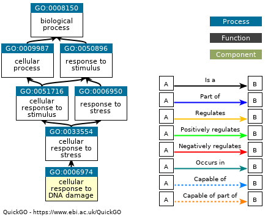

8 ORA analysis
As the paper “Urgent need for consistent standards in functional enrichment analysis” mentioned, popular functional enrichment tools can be classified into two main categories: (1) over-representation analysis (ORA) and (2) functional class scoring (FCS).
Kindly Note: No matter which method you choose, the first thing is always the preparation of gene sets.
8.1 ORA method introduction
According to paper “Over-representation of correlation analysis (ORCA): a method for identifying associations between variable sets”:
Over-representation analysis (ORA) is a simple method for objectively deciding whether a set of variables of known or suspected biological relevance, such as a gene set or pathway, is more prevalent in a set of variables of interest than we expect by chance.
ORA usually has these procedures:
- Identify features, such as mRNA, proteins or microarray probes, considered “differentially expressed” in two or more conditions
- Determine the number of differentially expressed features in each pathway
- For each pathway, using a hypergeometric distribution to calculate a probability value (P-value) of obtaining the number of differentially expressed features against the background list of all features
8.2 Basic usage
The simplest arguments are:
-
id: gene id of Entrez (numeric id is also supported), Ensembl, Symbol (alias is also accepted) or Uniprot -
geneset: gene set is a two-column data frame with term id and gene id. (It’s recommended to use geneset) -
p_cutoff: numeric of cutoff for both pvalue and adjusted pvalue, default is 0.05. -
q_cutoff: numeric of cutoff for qvalue, default is 0.15.
8.2.1 1st step: prepare input IDs
To show the various input ID types, we choose Entrez ID, Symbol from human and Uniprot from rat protein example data.
data(geneList, package = "genekitr")
entrez_id <- names(geneList)[abs(geneList) > 2]
head(entrez_id, 5)## [1] "948" "1638" "158471" "10610" "6947"
symbol_id <- c("TP53","BRCA1","TET2") # all official symbols
mix_symbol_id <- c("BCC7","BRCA1","TET2") # mixture of official symbol and alias
unip_id <- rat_prodata$Acc[1:100]
head(unip_id, 5)## [1] "P27364" "P17475" "P14046" "P00507" "P15650"8.2.2 2nd step: prepare gene set
For more details, please refer to chapter 7
Here we prepare GO MF gene set:
8.2.3 3rd step: ORA analysis
For non-symbol genes (e.g. Entrez IDs):
## Hs_MF_ID Description
## GO:0005041 GO:0005041 low-density lipoprotein particle receptor activity
## GO:0000217 GO:0000217 DNA secondary structure binding
## GO:0030228 GO:0030228 lipoprotein particle receptor activity
## GO:0140612 GO:0140612 DNA damage sensor activity
## GeneRatio BgRatio pvalue p.adjust qvalue
## GO:0005041 0.02380952 15/18850 0.0001251174 0.02376978 0.02151516
## GO:0000217 0.03174603 39/18850 0.0001306032 0.02376978 0.02151516
## GO:0030228 0.02380952 18/18850 0.0002211198 0.02682920 0.02428439
## GO:0140612 0.02380952 24/18850 0.0005326318 0.04846950 0.04387204
## geneID geneID_symbol Count FoldEnrich
## GO:0005041 948/53353/3949 CD36/LRP1B/LDLR 3 29.92063
## GO:0000217 4208/641/7516/63967 MEF2C/BLM/XRCC2/CLSPN 4 15.34392
## GO:0030228 948/53353/3949 CD36/LRP1B/LDLR 3 24.93386
## GO:0140612 29128/5888/7516 UHRF1/RAD51/XRCC2 3 18.70040
## RichFactor
## GO:0005041 0.2000000
## GO:0000217 0.1025641
## GO:0030228 0.1666667
## GO:0140612 0.1250000For symbol genes without alias:
## Hs_MF_ID Description
## GO:0002039 GO:0002039 p53 binding
## GO:0031625 GO:0031625 ubiquitin protein ligase binding
## GO:0044389 GO:0044389 ubiquitin-like protein ligase binding
## GO:0001094 GO:0001094 TFIID-class transcription factor complex binding
## GO:0140666 GO:0140666 annealing activity
## GO:0097371 GO:0097371 MDM2/MDM4 family protein binding
## GeneRatio BgRatio pvalue p.adjust qvalue geneID
## GO:0002039 0.6666667 69/18850 3.952293e-05 0.001739009 0.0002912216 TP53/BRCA1
## GO:0031625 0.6666667 308/18850 7.897407e-04 0.012346009 0.0020675134 TP53/BRCA1
## GO:0044389 0.6666667 328/18850 8.951716e-04 0.012346009 0.0020675134 TP53/BRCA1
## GO:0001094 0.3333333 10/18850 1.590752e-03 0.012346009 0.0020675134 TP53
## GO:0140666 0.3333333 11/18850 1.749734e-03 0.012346009 0.0020675134 TP53
## GO:0097371 0.3333333 12/18850 1.908700e-03 0.012346009 0.0020675134 TP53
## Count FoldEnrich RichFactor
## GO:0002039 2 182.12560 0.028985507
## GO:0031625 2 40.80087 0.006493506
## GO:0044389 2 38.31301 0.006097561
## GO:0001094 1 628.33333 0.100000000
## GO:0140666 1 571.21212 0.090909091
## GO:0097371 1 523.61111 0.083333333For symbol genes with alias:
## Hs_MF_ID Description
## GO:0002039 GO:0002039 p53 binding
## GO:0031625 GO:0031625 ubiquitin protein ligase binding
## GO:0044389 GO:0044389 ubiquitin-like protein ligase binding
## GO:0001094 GO:0001094 TFIID-class transcription factor complex binding
## GO:0140666 GO:0140666 annealing activity
## GO:0097371 GO:0097371 MDM2/MDM4 family protein binding
## GeneRatio BgRatio pvalue p.adjust qvalue geneID
## GO:0002039 0.6666667 69/18850 3.952293e-05 0.001739009 0.0002912216 BCC7/BRCA1
## GO:0031625 0.6666667 308/18850 7.897407e-04 0.012346009 0.0020675134 BCC7/BRCA1
## GO:0044389 0.6666667 328/18850 8.951716e-04 0.012346009 0.0020675134 BCC7/BRCA1
## GO:0001094 0.3333333 10/18850 1.590752e-03 0.012346009 0.0020675134 BCC7
## GO:0140666 0.3333333 11/18850 1.749734e-03 0.012346009 0.0020675134 BCC7
## GO:0097371 0.3333333 12/18850 1.908700e-03 0.012346009 0.0020675134 BCC7
## geneID_symbol Count FoldEnrich RichFactor
## GO:0002039 TP53/BRCA1 2 182.12560 0.028985507
## GO:0031625 TP53/BRCA1 2 40.80087 0.006493506
## GO:0044389 TP53/BRCA1 2 38.31301 0.006097561
## GO:0001094 TP53 1 628.33333 0.100000000
## GO:0140666 TP53 1 571.21212 0.090909091
## GO:0097371 TP53 1 523.61111 0.083333333For Uniprot proteins:
## Rn_MF_ID
## GO:0004497 GO:0004497
## GO:0008395 GO:0008395
## GO:0020037 GO:0020037
## GO:0046906 GO:0046906
## GO:0016705 GO:0016705
## GO:0005506 GO:0005506
## Description
## GO:0004497 monooxygenase activity
## GO:0008395 steroid hydroxylase activity
## GO:0020037 heme binding
## GO:0046906 tetrapyrrole binding
## GO:0016705 oxidoreductase activity, acting on paired donors, with incorporation or reduction of molecular oxygen
## GO:0005506 iron ion binding
## GeneRatio BgRatio pvalue p.adjust qvalue
## GO:0004497 0.2021277 171/18860 1.123298e-20 3.268797e-18 2.222948e-18
## GO:0008395 0.1489362 65/18860 1.055455e-19 1.535687e-17 1.044345e-17
## GO:0020037 0.1914894 186/18860 1.586160e-18 1.538576e-16 1.046309e-16
## GO:0046906 0.1914894 195/18860 3.734600e-18 2.716921e-16 1.847644e-16
## GO:0016705 0.1914894 249/18860 2.956597e-16 1.720740e-14 1.170190e-14
## GO:0005506 0.1702128 219/18860 1.299473e-14 6.302444e-13 4.285981e-13
## geneID
## GO:0004497 P24483/P17178/P04800/P20816/P18125/P15149/P00176/P13107/P05178/P05179/P08683/P11510/P20814/P19225/P10633/P10634/P12939/P11715/P23457
## GO:0008395 P24483/P17178/P04800/P18125/P15149/P00176/P13107/P05178/P05179/P08683/P11510/P20814/P10633/P11715
## GO:0020037 P04762/P17178/P20816/P18125/P15149/P00176/P13107/P05178/P05179/P08683/P11510/P20814/P19225/P10633/P10634/P12939/P11715/P01946
## GO:0046906 P04762/P17178/P20816/P18125/P15149/P00176/P13107/P05178/P05179/P08683/P11510/P20814/P19225/P10633/P10634/P12939/P11715/P01946
## GO:0016705 P24483/P17178/P20816/P18125/P15149/P00176/P13107/P05178/P05179/P08683/P11510/P20814/P19225/P10633/P10634/P12939/P11715/P23457
## GO:0005506 P24483/P17178/P20816/P18125/P15149/P00176/P13107/P05178/P05179/P08683/P11510/P20814/P10633/P11715/P18418/P21816
## geneID_symbol
## GO:0004497 Fdx1/Cyp27a1/Cyp3a1/Cyp4a2/Cyp7a1/Cyp2a2/Cyp2b1/Cyp2b3/Cyp2c6v1/Cyp2c7/Cyp2c11/Cyp2c12/Cyp2c13/Cyp2c70/Cyp2d1/Cyp2d26/Cyp2d10/Cyp17a1/Akr1c9
## GO:0008395 Fdx1/Cyp27a1/Cyp3a1/Cyp7a1/Cyp2a2/Cyp2b1/Cyp2b3/Cyp2c6v1/Cyp2c7/Cyp2c11/Cyp2c12/Cyp2c13/Cyp2d1/Cyp17a1
## GO:0020037 Cat/Cyp27a1/Cyp4a2/Cyp7a1/Cyp2a2/Cyp2b1/Cyp2b3/Cyp2c6v1/Cyp2c7/Cyp2c11/Cyp2c12/Cyp2c13/Cyp2c70/Cyp2d1/Cyp2d26/Cyp2d10/Cyp17a1/Hba1
## GO:0046906 Cat/Cyp27a1/Cyp4a2/Cyp7a1/Cyp2a2/Cyp2b1/Cyp2b3/Cyp2c6v1/Cyp2c7/Cyp2c11/Cyp2c12/Cyp2c13/Cyp2c70/Cyp2d1/Cyp2d26/Cyp2d10/Cyp17a1/Hba1
## GO:0016705 Fdx1/Cyp27a1/Cyp4a2/Cyp7a1/Cyp2a2/Cyp2b1/Cyp2b3/Cyp2c6v1/Cyp2c7/Cyp2c11/Cyp2c12/Cyp2c13/Cyp2c70/Cyp2d1/Cyp2d26/Cyp2d10/Cyp17a1/Akr1c9
## GO:0005506 Fdx1/Cyp27a1/Cyp4a2/Cyp7a1/Cyp2a2/Cyp2b1/Cyp2b3/Cyp2c6v1/Cyp2c7/Cyp2c11/Cyp2c12/Cyp2c13/Cyp2d1/Cyp17a1/Calr/Cdo1
## Count FoldEnrich RichFactor
## GO:0004497 19 22.29314 0.11111111
## GO:0008395 14 43.21440 0.21538462
## GO:0020037 18 19.41661 0.09677419
## GO:0046906 18 18.52046 0.09230769
## GO:0016705 18 14.50397 0.07228916
## GO:0005506 16 14.65851 0.073059368.2.4 Some features
We can draw some conclusions about the following features based on the examples above:
- No need to specify input ID type and organism. genekitr will automatically detect the organism name and convert IDs to the suitable type.
- Returns a data.frame object which is easy to filter or export
- Non-symbol IDs will be automatically converted to the latest gene symbol for easier interpretation
- If input symbols are mixed with aliases, a new column “geneID_symbol” will be added; if all symbols are official, only the “geneID” column will be returned
-
genORA()includes five gene-level measurements: “Count”, “BgRatio”, “GeneRatio”, “FoldEnrichment” and “RichFactor”.-
BgRatio: Number of all genes in a specific term / Number of universal genes (if not specified, this is all genes in the gene set) -
GeneRatio: Number of genes enriched in a specific term / Number of input genes -
FoldEnrichment: GeneRatio / BgRatio -
RichFactor: Number of genes enriched in a specific term / Number of all genes in that specific term
-
8.3 Advanced usage
8.3.1 Additional arguments
-
pAdjustMethod: choose from “holm”, “hochberg”, “hommel”, “bonferroni”, “BH”, “BY”, “fdr”, “none” -
min_gset_size: Minimal size of each gene set for analysis. Default is 10. Pathways with fewer than ten genes will be omitted (e.g. GO:0062196 is a child term with 8 genes at the bottom of the directed acyclic graph). -
max_gset_size: Maximal size. Default is 500. Pathways with more than 500 genes will be omitted (e.g. GO:0007049 has 1796 genes as parent nodes at the top of the directed acyclic graph). -
universe: If users have their own background genes, set them asuniverse. If missing, all genes in the geneset will be used as the background universe.
8.3.2 Group enrichment
If there is a multi-group comparison (e.g. multiple experimental conditions or multiple time points), users can specify gene groups using the group_list argument:
For example, we have 100 genes:
- 50/100 genes are up-regulated and 50/100 are down-regulated
- 40/100 genes are detected at time point 1 and 60/100 are detected at time point 2
id_100 <- c(head(names(geneList), 50), tail(names(geneList), 50))
two_groups <- list(
exp_group = c(rep("up", 50), rep("down", 50)),
time_group = c(rep("time1", 40), rep("time2", 60))
)
gora <- genORA(id_100, geneset = hg_gs, group_list = two_groups)
head(gora)## Hs_MF_ID Cluster Description GeneRatio BgRatio
## 1 GO:0140612 down.time2 DNA damage sensor activity 0.06122449 24/18850
## 2 GO:0019887 down.time2 protein kinase regulator activity 0.12244898 247/18850
## 3 GO:0140097 down.time2 catalytic activity, acting on DNA 0.12244898 254/18850
## 4 GO:0019207 down.time2 kinase regulator activity 0.12244898 285/18850
## 5 GO:0000217 down.time2 DNA secondary structure binding 0.06122449 39/18850
## 6 GO:0003697 down.time2 single-stranded DNA binding 0.08163265 123/18850
## pvalue p.adjust qvalue geneID
## 1 3.215023e-05 0.003383207 0.002232184 29128/5888/7516
## 2 4.156248e-05 0.003383207 0.002232184 595/7039/9134/374/81848/10253
## 3 4.856278e-05 0.003383207 0.002232184 54821/5427/641/5888/7516/9156
## 4 9.179549e-05 0.004796314 0.003164529 595/7039/9134/374/81848/10253
## 5 1.412419e-04 0.005903911 0.003895303 641/7516/63967
## 6 2.914794e-04 0.008975733 0.005922040 641/5888/8318/55388
## geneID_symbol Count FoldEnrich RichFactor
## 1 UHRF1/RAD51/XRCC2 3 48.086735 0.12500000
## 2 CCND1/TGFA/CCNE2/AREG/SPRY4/SPRY2 6 9.344791 0.02429150
## 3 ERCC6L/POLE2/BLM/RAD51/XRCC2/EXO1 6 9.087257 0.02362205
## 4 CCND1/TGFA/CCNE2/AREG/SPRY4/SPRY2 6 8.098818 0.02105263
## 5 BLM/XRCC2/CLSPN 3 29.591837 0.07692308
## 6 BLM/RAD51/CDC45/MCM10 4 12.510370 0.03252033
table(gora$Cluster)##
## down.time2 up.time1 up.time2
## 18 3 178.3.3 Add background genes
With the help of transId(), background genes can be of a different type from the input IDs.
For example, the input genes are symbols while the background genes are Entrez.
## [1] "948" "1638" "158471" "10610" "6947" "100133941"8.3.4 [GO specific] Simplify GO ORA result
To improve GO term simplifying performance, genekitr extracts species-specific GO term information from Bioconductor organism-level annotation packages for fifteen species, including human, mouse, rat, fly, thale cress, yeast, zebrafish, worm, bovine, pig, chicken, mosquito, dog, frog, and chimpanzee.
Then genekitr obtains the ancestors of GO terms and their relations from GO.db
To calculate semantic similarity for GO BP, CC and MF, genekitr utilizes five algorithms (‘Resnik’, ‘Lin’, ‘Jiang’, ‘Rel’ and ‘Wang’) from GOSemSim
## [1] 33 11## [1] 20 11Let’s look at which terms are considered redundant:
## [1] "GO:0031625" "GO:0140666" "GO:0001091" "GO:0140693" "GO:0140296"
## [6] "GO:0001098"
Figure 8.1: Term GO:0044389
The first record GO:0044389 has the child term GO:0031625, so we only keep the child term.
8.4 Comparison with other tools
8.4.1 genekitr::genORA vs clusterProfiler::enrichGO/enrichKEGG/enrichDO...
The function genORA does not require you to load the orgdb in advance and does not require specifying the input ID type.
Next, let’s take GO analysis as an example:
The input IDs are a mixture of official symbols and aliases. All five genes are also very popular in biomedical research.
check_gene <- c("BCC7", "PDL1", "PD1", "TET2", "BRCA1")
# Genekitr
start = Sys.time()
gs <- geneset::getGO(org = "human",ont = "bp")
genekitr_res <- genekitr::genORA(check_gene, gs, p_cutoff = 0.01, q_cutoff = 0.01)
end = Sys.time()
(end-start)## Time difference of 8.804376 secs
# clusterProfiler
start = Sys.time()
require(org.Hs.eg.db)
clustp_res <- clusterProfiler::enrichGO(check_gene,
OrgDb = "org.Hs.eg.db",
keyType = "SYMBOL",
pvalueCutoff = 0.01,
qvalueCutoff = 0.01,
ont = "BP")
end = Sys.time()
(end-start)## Time difference of 31.64099 secsThen check the result:
class(genekitr_res)## [1] "data.frame"
class(clustp_res)## [1] "enrichResult"
## attr(,"package")
## [1] "DOSE"
isS4(clustp_res)## [1] TRUE
# we need to convert the S4 object to a data frame to view it
clustp_res2 <- as.data.frame(clustp_res)
dim(genekitr_res)## [1] 45 12
dim(clustp_res2)## [1] 11 9
head(genekitr_res,5)## Hs_BP_ID Description
## GO:0070234 GO:0070234 positive regulation of T cell apoptotic process
## GO:0070230 GO:0070230 positive regulation of lymphocyte apoptotic process
## GO:2000108 GO:2000108 positive regulation of leukocyte apoptotic process
## GO:0070232 GO:0070232 regulation of T cell apoptotic process
## GO:0070228 GO:0070228 regulation of lymphocyte apoptotic process
## GeneRatio BgRatio pvalue p.adjust qvalue
## GO:0070234 0.6 15/19160 3.878252e-09 1.947021e-06 4.904151e-07
## GO:0070230 0.6 18/19160 6.953647e-09 1.947021e-06 4.904151e-07
## GO:2000108 0.6 30/19160 3.456529e-08 6.452187e-06 1.625175e-06
## GO:0070232 0.6 42/19160 9.764442e-08 1.367022e-05 3.443251e-06
## GO:0070228 0.6 61/19160 3.056611e-07 2.852837e-05 7.185717e-06
## geneID geneID_symbol Count FoldEnrich RichFactor
## GO:0070234 BCC7/PDL1/PD1 TP53/CD274/PDCD1 3 766.4000 0.20000000
## GO:0070230 BCC7/PDL1/PD1 TP53/CD274/PDCD1 3 638.6667 0.16666667
## GO:2000108 BCC7/PDL1/PD1 TP53/CD274/PDCD1 3 383.2000 0.10000000
## GO:0070232 BCC7/PDL1/PD1 TP53/CD274/PDCD1 3 273.7143 0.07142857
## GO:0070228 BCC7/PDL1/PD1 TP53/CD274/PDCD1 3 188.4590 0.04918033
head(clustp_res,5)## ID Description GeneRatio BgRatio
## GO:0051568 GO:0051568 histone H3-K4 methylation 2/2 57/18866
## GO:0044728 GO:0044728 DNA methylation or demethylation 2/2 98/18866
## GO:0034968 GO:0034968 histone lysine methylation 2/2 116/18866
## GO:0006304 GO:0006304 DNA modification 2/2 120/18866
## GO:0018022 GO:0018022 peptidyl-lysine methylation 2/2 132/18866
## pvalue p.adjust qvalue geneID Count
## GO:0051568 8.968633e-06 0.001892382 9.440666e-06 TET2/BRCA1 2
## GO:0044728 2.670922e-05 0.002006407 1.000951e-05 TET2/BRCA1 2
## GO:0034968 3.748169e-05 0.002006407 1.000951e-05 TET2/BRCA1 2
## GO:0006304 4.012283e-05 0.002006407 1.000951e-05 TET2/BRCA1 2
## GO:0018022 4.858571e-05 0.002006407 1.000951e-05 TET2/BRCA1 2-
clustp_resonly contains two genes:TET2andBRCA1 -
genekitr_resincludes all five genes and provides mapping for aliases
If you look closer, you may find that eight terms are unique to clustp_res, such as GO:0016571:
clustp_res$ID[!clustp_res$ID%in%genekitr_res$Hs_BP_ID ]## [1] "GO:0051568" "GO:0044728" "GO:0034968" "GO:0006304" "GO:0018022"
## [6] "GO:0016571" "GO:0006479" "GO:0008213" "GO:0043414" "GO:0032259"
## [11] "GO:0018205"Question 1: Why are some terms omitted in the genORA result?
To get the adjusted p-value, the critical parameter is the number of statistical tests performed.
For a simple explanation, adj.p = f * p (f>1) and f is related to the testing method and the number of tests. genORA recognizes five genes, so we need to perform more tests (for example, five tests), while enrichGO only includes two genes, so the number of tests will be lower. This directly reduces the adj.p in the enrichGO result, allowing it to remain under the threshold of 0.01.
So, if we set a higher cutoff (e.g. 0.05), genekitr can also retrieve those terms:
genekitr_res2 <- genekitr::genORA(check_gene, gs, p_cutoff = 0.05, q_cutoff = 0.05)
table(clustp_res$ID%in%genekitr_res2$Hs_BP_ID)##
## FALSE TRUE
## 10 1Question 2: Why does enrichGO only recognize two genes?
It’s hard to imagine that such essential genes (“BCC7”, “PD1” or “PDL1”) would have no enriched terms at all.
The core reason is that these three genes are actually aliases, while enrichGO sets the argument keyType = "SYMBOL", which causes enrichGO to only accept official symbols. This function is based on an organism annotation package (e.g. org.Hs.eg.db) and it will accept different types of data from org.Hs.eg.db:
## [1] "ACCNUM" "ALIAS" "ENSEMBL" "ENSEMBLPROT" "ENSEMBLTRANS"
## [6] "ENTREZID" "ENZYME" "EVIDENCE" "EVIDENCEALL" "GENENAME"
## [11] "GO" "GOALL" "IPI" "MAP" "OMIM"
## [16] "ONTOLOGY" "ONTOLOGYALL" "PATH" "PFAM" "PMID"
## [21] "PROSITE" "REFSEQ" "SYMBOL" "UCSCKG" "UNIGENE"
## [26] "UNIPROT"Only by specifying keyType = 'ALIAS' can the program recognize gene aliases; however, it still cannot distinguish a mixture of symbols and aliases.